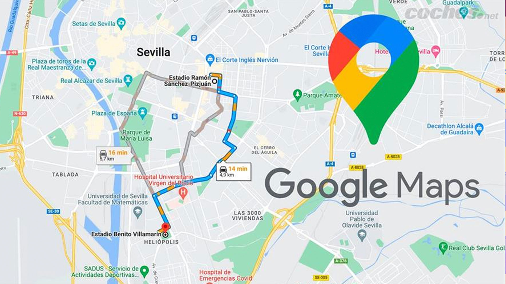

¿Qué es un protocolo de red?
Un protocolo es un conjunto de reglas que permite que los dispositivos en una red se comuniquen correctamente.
Ejemplo cotidiano:
Una persona hablando en un idioma con otras personas. Los protocolos son como esos idiomas: permiten que todos los dispositivos “hablen” el mismo idioma para entenderse.
A continuación, se presenta una tabla con los principales protocolos de red, así como un ejemplo de cada uno.
| Protocolos de red | Característica | Ejemplo | |
| TCP (Protocolo de Control de Transmisión) | Asegura que los datos se transmitan correctamente y lleguen en orden. Se usa en la capa de Transporte. | Cuando envías un archivo por Internet, TCP asegura que cada parte del archivo llegue completa. | |
| IP (Protocolo de Internet) | Encargado de dirigir los datos a través de la red mediante direcciones IP. Opera en la capa de Red. | IP es como un GPS que dirige los datos al destino correcto. |  |
| HTTP (Protocolo de Transferencia de Hipertexto) | Usado para transferir páginas web. Funciona en la capa de Aplicación. | Cada vez que visitas una página web, se utiliza HTTP para recibir y ver el contenido. | |
| FTP (Protocolo de Transferencia de Archivos) | Utilizado para transferir archivos entre dispositivos. También se encuentra en la capa de Aplicación. | Si subes o bajas archivos en la nube, FTP facilita este proceso. | |
Relación de protocolos con las capas de los modelos
Cada protocolo se asocia con una capa del modelo OSI o TCP/IP. Esto asegura que los datos se transmitan y lleguen de forma ordenada y eficiente.
Ejemplo cotidiano:
Imagina una cadena de trabajo en una fábrica. Cada estación tiene una función específica para que el producto final salga bien. Los protocolos funcionan de manera similar, asegurando que cada capa en la comunicación haga su parte.
Los protocolos de red permiten que los dispositivos se comuniquen correctamente y garantizan una transmisión de datos eficiente y segura. Cada protocolo juega un papel importante en las diferentes capas de los modelos de comunicación.